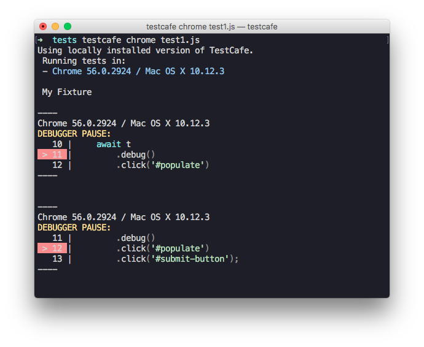

TestCafe v0.14.0 Released
Authentication via user roles, client-side debugging and numerous bug fixes.
Enhancements #
⚙ Authentication via user roles (#243) #
Many test scenarios involve the activity of more than one user. TestCafe addresses these scenarios by providing a convenient way to isolate authentication test actions and apply them easily whenever you need to switch the user account.
A piece of logic that logs in a particular user is called a role. It is a good practice to create a role for each user account participating in your test.
Create roles via the Role constructor. You can keep them in a separate helper file.
helper.js
import { Role } from 'testcafe';
export var regularAccUser = Role('http://example.com/login', async t => {
await t
.typeText('#login', 'TestUser')
.typeText('#password', 'testpass')
.click('#sign-in');
});
export var facebookAccUser = Role('http://example.com/login', async t => {
await t
.click('#sign-in-with-facebook')
.typeText('#email', 'testuser@mycompany.com')
.typeText('#pass', 'testpass')
.click('#submit');
});
export var admin = Role('http://example.com/login', async t => {
await t
.typeText('#login', 'Admin')
.typeText('#password', 'adminpass')
.click('#sign-in');
});
In test code, use the t.useRole method to switch between roles.
test.js
import { regularAccUser, admin } from './helper';
import { Selector } from 'testcafe';
const entry = Selector('#entry');
const removeButton = Selector('#remove-entry');
fixture `My Fixture`
.page `http://example.com`;
test('test that involves two users', async t => {
await t
.useRole(regularAccUser)
.expect(entry.exists).ok()
.expect(removeButton.visible).notOk()
.useRole(admin)
.expect(removeButton.visible).ok()
.click(removeButton)
.expect(entry.exists).notOk()
});
To learn more, see User Roles.
⚙ BrowserStack support #
We have released the BrowserStack browser provider plugin.
Install this plugin from npm.
npm install testcafe-browser-provider-browserstack
And save the BrowserStack username and access key to environment variables BROWSERSTACK_USERNAME and BROWSERSTACK_ACCESS_KEY.
Now you can run tests on any virtual machine available on BrowserStack.
testcafe "browserstack:Chrome@53.0:Windows 10" "path/to/test/file.js"
⚙ Client-side debugging (#918) #
We have added a new t.debug method to debug test behavior on the client.
When test execution reaches t.debug, it pauses so that you can open browser's developer tools
and check the web page state, DOM elements location, their CSS styles.
fixture `My fixture`
.page `https://devexpress.github.io/testcafe/example`;
test('My test', async t => {
await t
.debug()
.setNativeDialogHandler(() => true)
.click('#populate')
.click('#submit-button');
});
In the footer, you'll find buttons that allow you to continue test execution or step to the next test action.

TestCafe logs points in code where the debugger stopped.

⚙ Testing local webpages (#1286) #
You can now run tests against local webpages. To do this, specify a URL with the file:// scheme or a relative path when calling the page function.
fixture `MyFixture`
.page `file:///user/my-website/index.html`;
fixture `MyFixture`
.page `../my-project/index.html`;
You can also navigate to local pages with the t.navigateTo action.
fixture `My fixture`
.page `http://www.example.com/`;
test('Navigate to local pages', async t => {
await t
.navigateTo('file:///user/my-website/index.html')
.navigateTo('../my-project/index.html');
});
⚙ Adding custom methods to the selector (#1212) #
You can now extend selectors with custom methods executed on the client. Use the addCustomMethods method to provide custom methods.
const myTable = Selector('.my-table').addCustomMethods({
getCellText: (table, rowIndex, columnIndex) =>
table.rows[rowIndex].cells[columnIndex].innerText
});
await t.expect(myTable.getCellText(1, 1)).contains('hey!');
Use this feature to build selectors that reflect the specifics of your web app.
⚙ Removing the native dialog handler (#243) #
We have added the capability to remove a native dialog handler by passing null to the t.setNativeDialogHandler method.
fixture `My fixture`
.page `https://devexpress.github.io/testcafe/example`;
test('My test', async t => {
await t
.setNativeDialogHandler(() => true)
.click('#populate')
.setNativeDialogHandler(null)
.click('#submit-button');
});
Bug Fixes #
- Fixed a bug that led to an incorrect callstack in test run report (#1226)
- Cursor is now hidden on screenshots created using the
t.takeScreenshotaction (#1245) - Error no longer appears when selecting a non-existent child by index (#1240)
- The blur event is now raised on time when an input is hidden in IE (#1275)
- TestCafe no longer fails if a client function argument contains ES6 class method syntax (#1279)
- TestCafe now reports errors that occur during browser provider initialization (#1282)
- Click on the debugger panel no longer affects the tested page (#1200)
- An unhandled error no longer occurs when running a fixture without tests (#1302)
- The
inputevent is now raised when the value of aselectelement is changed (#1311) - You can now perform actions with ShadowDOM elements (#1312)
- Server no longer responds with status 222 when window.fetch() is called in Chrome (#1134)
- The JSON reporter no longer returns
screenshotPath: nullif a screenshot path is not specified (#1269) - The
navigateToaction no longer fails silently with schemes likehttp*string*://(#965) - The SVG
usetag is no longer broken when the parent page has afile://URL (testcafe-hammerhead/#1051) - Fixed a bug where
toStringwas used instead ofinstanceToStringfrom DOM utils (testcafe-hammerhead/#1055) - File download is no longer raised if the resource is fetched by setting the script src (testcafe-hammerhead/#1062)
- Fixed wrong CORS emulation for
fetchrequests (testcafe-hammerhead/#1059) Navigator.sendBeaconfunction is now overridden (testcafe-hammerhead/#1035)